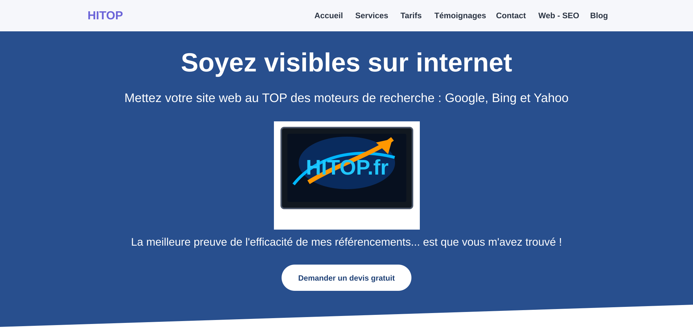
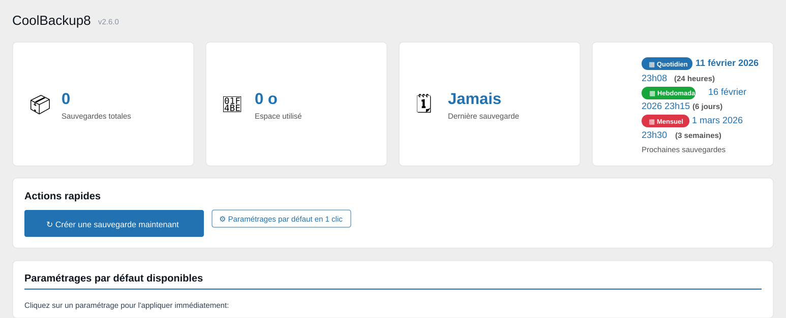
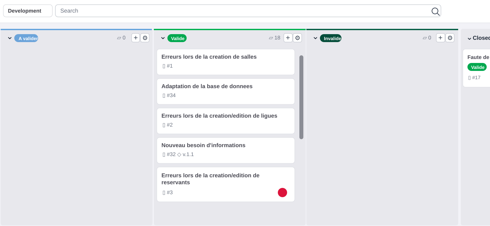
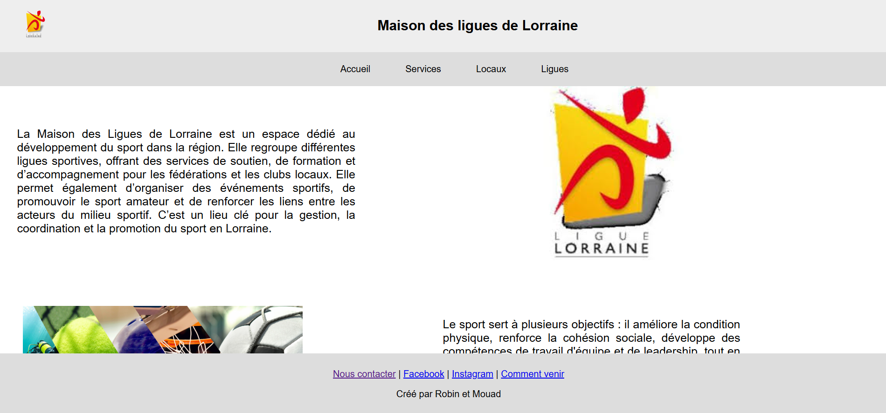

Mes Projets
Projets en milieu professionnel

HITOP - Site vitrine et présence en ligne
Refonte du site vitrine de HITOP avec amélioration de l'accueil, des services, des appels à l'action, du responsive et de la présentation générale de l'entreprise.

CoolBackup8 - Plugin WordPress
Création d'un plugin WordPress compatible PHP 8 avec tableau de bord, sauvegarde manuelle, configuration, archives et suivi des actions.
Projets scolaires BTS SIO

AP Ticketing 1.2 - Maintenance application
Maintenance corrective et évolutive d'une application de réservation de salles : analyse des tickets, correction des anomalies et suivi des demandes.

AP 3.1 - Site M2L dynamique
Création d'un site dynamique avec gestion de comptes, affichage de données et parcours adaptés aux différents profils utilisateurs.

AP 2.3 - Site web statique
Réalisation d'un site vitrine en HTML et CSS avec une navigation claire, une structure organisée et une mise en page responsive.